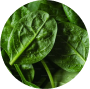

저속노화 식사법


recently
새해에는 남들보다 뇌 늙는 속도를 4분의 1로 만드는 식사를 해보자!
01
저속노화 식단의 대두
최근 젊은 층 사이에서 '저속노화 식단'이 유행하고 있다. 이는 노화 속도를 늦출 수 있는 밥상을 뜻한다. 통곡물과 채소 중심으로 구성된 건강한 식단을 구성하는
게 핵심이다. 한때 젊은 층을 중심으로 자극적인 음식이 인기를 끌었으나, 최근 들어 다소 심심한 식단이 주목받고 있다. 이 같은 현상은 '웰 에이징(Well aging)' '슬로 에이징(Slow
aging)' 등 건강하고 자연스러운 나이 듦에 대한 관심이 높아지면서 나타난 현상이다.
정희원 교수


recently
저속노화 식단의
필수적인 핵심

필수적인 핵심
02
저속노화 식단의 규칙
최근 젊은 층 사이에서 '저속노화 식단'이 유행하고 있다. 이는 노화 속도를 늦출 수 있는 밥상을 뜻한다. 통곡물과 채소 중심으로 구성된 건강한 식단을 구성하는 게
핵심이다. 한때 젊은 층을 중심으로 자극적인 음식이 인기를 끌었으나, 최근 들어 다소 심심한 식단이 주목받고 있다. 이 같은 현상은 '웰 에이징(Well aging)' '슬로 에이징(Slow
aging)' 등 건강하고 자연스러운 나이 듦에 대한 관심이 높아지면서 나타난 현상이다.
아침에 혈당 스파이크를 만들어 놓으면 점심의 식욕도 바꿔놓고 저녁까지 나빠진다. 아침 식사에 단순당과 정제 곡물이 적게 포함돼야 한다
아침에 혈당 스파이크를 만들어 놓으면 점심의 식욕도 바꿔놓고 저녁까지 나빠진다. 아침 식사에 단순당과 정제 곡물이 적게 포함돼야 한다
How do we
 low - age?
low - age?
저속노화 아침식사의
필수적 세 가지
03
저속노화 아침식사
첫째, 초록색 채소를 많이 넣자!
둘째, 단백질 음료를 선택하자!
셋째, 단백질을 추가하자!
둘째, 단백질 음료를 선택하자!
셋째, 단백질을 추가하자!

시금치
SPINACH
시금치는 비타민 A, C, 철분이 풍부해 면역력 강화와 혈액 건강에 도움을 준다.
SPINACH

두부
TOFU
 두부는 단백질과 칼슘이 풍부해
근육과 뼈 건강에 좋다.
두부는 단백질과 칼슘이 풍부해
근육과 뼈 건강에 좋다.
TOFU

계란
EGG
단백질과 비타민 B군이 풍부해 근육 강화와 에너지 생성에 도움을 준다.
EGG

닭고기
CHICKEN
고단백질 식품으로 근육 성장과
체력 회복에 효과적이다.
CHICKEN

프로틴 스무디
PROTEIN SMOOTHIE
 단백질과 식이섬유가 풍부해 근육 회복과
체중 관리에 도움이 된다.
단백질과 식이섬유가 풍부해 근육 회복과
체중 관리에 도움이 된다.
PROTEIN SMOOTHIE

우유 및 두유
MILK AND SOY MILK
단백질과 칼슘이 풍부해 뼈 건강에 도움을
주는 영양가가 높은 음료이다.
MILK AND SOY MILK

브로콜리
BROCCOLI
브로콜리는 항산화 물질과 비타민 C가 풍부해 면역력 증진과 노화 방지에 효과적이다.
BROCCOLI
청경채
BOK CHOY
청경채는 비타민 K와 칼슘이 많아 뼈를 튼튼하게 하고, 혈액 응고를 돕는다
BOK CHOY

modern society

DIABETES
20-30대 당뇨병
LIFE EXPECTANCY
기대 수명
SLOW-AGING
저속노화 관심도
Review
사회관계망서비스(SNS)를 중심으로 ‘저속노화 식단’ 유행이 거세다. 노년 내과 의사인 정희원 서울아산병원 교수가 지난해 초 엑스에 렌틸콩과 귀리, 현미로 만든 밥을 저속노화 식사법이라며 소개하면서 화제가 됐다. 저속노화 식단 커뮤니티에는 두 달 새 2만5천여명이 참여했다. 저속노화에 빠진 젊은 2030, 청년들의 이야기를 담았다.
평소 건강에 대한 경각심을 갖고 있지 않다가 건강검진을 받고 마음이 달라졌어요.
최대한 채소를 많이 먹으려고 노력하고 있어요!
밋밋한 ‘건강식’이, 친구들 사이에서 자랑 삼고 싶은 ‘힙한 습관’으로 자리 잡았어요!
저속 노화 식단을 계획한 후 그렇게 일주일 치 식재료를
딱 해치우면 스스로와의 미션을 성공한 기분이 들어요.
딱 해치우면 스스로와의 미션을 성공한 기분이 들어요.
건강할 때 관리해야 할 것 같아요.
건강한 식단 하면 예전에는 중년·노년층을 대상으로 한 종합편성채널 먹거리 프로그램이 떠올랐는데,
최근 커뮤니티에 올라오는 저속노화 식단은 인스타그램에 올라올 법한 사진이 많아 트렌디하게 느껴져요.
최근 커뮤니티에 올라오는 저속노화 식단은 인스타그램에 올라올 법한 사진이 많아 트렌디하게 느껴져요.